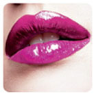
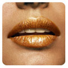
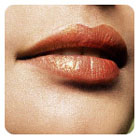
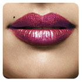
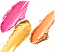

lipstik match-up
Lipstic has become a way of life for the average women.But the colors you love may not be the colors that flatter your face.Selecting the right shade of lipstic is a matter of instinct and whim and following the simple rule or three.
Start with looking at yourself carefully in the mirror. Use swatches of fabric to see what looks good on your facial skin – that will give you a clue which colour family to look at. The colour that makes your face seem muddy and dull is a complete no-no. When you find the shade that makes you seem as if you are lighted up and glowing, you will know it almost immediately. Every woman knows when she looks good.
The first step – take your time and examine the range of lipstick shades carefully. Choose a colour that gives you the same kind of 'glow' as the fabric did. To make it easier for you, you can use the following rule of thumb.
    
- If your skin is fairly light, opt for medium tones – pinks, beige, pale peach, orange, taupe.
- If your hair and skin are dark, choose deep tones – maroon, fuschia, dark chocolate, plum, wine, ruby.
- If your colouring is somewhere in between, you are lucky – you can wear almost anything you like, from a pale nude to a brilliant scarlet to a gentle caramel.
- If you are olive-toned, like many Indians, be careful with the violets and pale lavenders. Use brighter colours with less blue in them.

Call Now!
1800-1809-8097